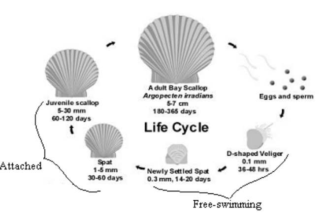

Instructor teaching notes: Lesson 22
Math300Z
Preparation
Open your Z-section project in Posit.cloud. Use get_lesson_worksheet(22) to bring in today’s worksheet.
- Open the worksheet and leave it for later in class.
- Create a new Rmd file, say,
"Scratch22.Rmd". We’ll do scratch work there.
Motivating problem 1: DAGs
You propose a DAG to describe a specific situation and want to see how well it matches the available data.
Common sense suggests that two variables y and x may not have any causal connection between them.
In such a case, we anticipate that the model y ~ x + ... will have a coefficient of zero on x. (The + ... stands for other possible explanatory variables, which we call “covariates.”)
This lesson is about two closely related things:
- When is a coefficient small enough that we can regard it as zero?
- When we have a coefficient generated by fitting a model to data, how do we describe how precisely we know it?
Motivating problem 2: Sustainable fisheries
Designing an enforcement regime for limits on scallop fisheries.
Fisheries are regulated by states and the Federal government in order to avoid collapse due to over-fishing. Often, the regulations attempt to protect juveniles—animals that have not yet reached reproductive age. If the juveniles are harvested, their potential progeny are annihilated. There are various ways to do this, for instance restricting fishing to months where adults are most prevalent, closing fisheries to provide an opportunity for the reproductive stock to recover, and so on.
In the 1990s, one of the ways the Federal government regulated scallop fisheries was by setting a minimum acceptable size for harvested scallops. For practical reasons, rather than monitoring individual scallops, the government monitored the average per-scallop weight of each boat’s catch. For the sake of the example, imagine that the minimum acceptable weight is 1/30 pound.
A fishing boat might have 10,000 or more bags of scallops, which can be handled individually: weigh the bag, then count the number of scallops to get the average weight per scallop.
Discussion questions:
- How many bags should be sampled? Should this depend on the number of bags in the cargo. For instance, should a cargo of 1000 bags be sampled differently than a cargo of 10,000 bags.
- What should be the threshold for declaring the whole cargo below minimum size? (The whole catch is confiscated in such a case.)
In this section of the course, you’ll learn some statistical concepts and methods that allow the above questions to be answered to produce a regulation that is protective and fair to the fishermen.
One idea is very simple: sampling variation. This is about how much the average per-scallop weight will vary from one bag to another.
Another idea is very subtle: What you can say about the whole cargo based on a sample of \(n\) bags.
Vocabulary: “Sample” vs “sampling”
The vocabulary here can be confusing, because similar sounding terms refer to different things.
A sample is a collection, just as a data frame is a collection of rows. The individual items in the collection—the individual rows—are “specimens,” or “cases,” or “rows,” or “units of observation,” or “observations,” or even “tuples.”
“Sampling” is the process of collecting a sample.
Statisticians use the phrase “sample statistic” to refer to a summary calculated from a sample. For instance, if your summary is the variance of a variable, this could properly be called the “sample variance.”
The terms “sampling variation” and “sampling variance.” “Sampling variation” is a theoretical concept: how much a model coefficient or other sample statistic would vary from one randomly collected sample to another. Our measurement of sampling variance is often accomplished with our usual tool for measuring variation: the variance.
You can’t directly see sampling variation in a single sample; however, we can use the theory of sampling variation to estimate from a single sample how much other samples might differ from the sample at hand. In this Lesson, we will simulate sampling variation in order to understand its properties, particularly how it depends on the sample size \(n\).
Technical vocabulary:
- “Confidence interval” (or “CI”) a range indicating the sampling variation of a sample statistic. Example: [19.1, 21.5]. Every model coefficient comes with a confidence interval. The
conf_interval()model summary calculates the CI. Example:
lm(mpg ~ hp, data=mtcars) |> conf_interval()# A tibble: 2 × 4
term .lwr .coef .upr
<chr> <dbl> <dbl> <dbl>
1 (Intercept) 26.8 30.1 33.4
2 hp -0.0889 -0.0682 -0.0476- “Standard error”: the square-root of the “sampling variance.” It might make more sense to use “sampling standard deviation” for the square root of the “sampling variance.”
- “Margin of error” is the plus-or-minus part \(20.3 \pm 1.2\) of another format for writing the CI.
- “Confidence level” is a number between 0 and 1. Almost always this is set to be 95%, which is what we will use. It is used to calculate the margin of error, which is a multiple of the standard error. For 95%, the multiplier is about 2. (If you took AP statistics, you may remember the number 1.96, which is their way of saying “two.”)
Essential take-home points
The sampling variance depends on the sample size. Larger n leads to smaller sampling variance. The dependence is simple: sampling variance goes as \(1/n\).
The width of the confidence interval depends on the square-root of the sampling variance. Consequently, the width of the confidence interval goes as \(1/\sqrt{n}\).
Stated more simply: Under normal conditions, more data means shorter confidence intervals.
Class Activity
Work though worksheet 22
This is a simulation demonstration of the essential take-home points listed above. In Lesson 23 we’ll see how it’s possible to do the calculations in real data.
Confidence level
Not a big deal in our course. Use 0.95, which is the default for conf_interval().
A lower confidence level produces a shorter CI, a higher confidence level produces a longer CI.
lm(mpg ~ hp, data=mtcars) |> conf_interval(level=0.80) |> filter(term=="hp")# A tibble: 1 × 4
term .lwr .coef .upr
<chr> <dbl> <dbl> <dbl>
1 hp -0.0815 -0.0682 -0.0550lm(mpg ~ hp, data=mtcars) |> conf_interval(level=0.90) |> filter(term=="hp")# A tibble: 1 × 4
term .lwr .coef .upr
<chr> <dbl> <dbl> <dbl>
1 hp -0.0854 -0.0682 -0.0511lm(mpg ~ hp, data=mtcars) |> conf_interval(level=1.00) |> filter(term=="hp")# A tibble: 1 × 4
term .lwr .coef .upr
<chr> <dbl> <dbl> <dbl>
1 hp -Inf -0.0682 InfDigression
Is process of fitting like the process of learning in animals? Here’s a report from The Economist:
Never before … has the whole brain of such a complex organism—spanning some 548,000 connections between 3,016 neurons in the case of the fruit-fly larva—been mapped.
The latest work, published in Science, marks the culmination of over a decade’s worth of effort ….
The connectome of the fruit-fly larva has already provided insights. For example, regions of the creature’s brain associated with learning had more loops in their circuitry, with downstream neurons connecting back to those close behind them, than other regions of the brain. This suggested some repeat processing of signals. One proposed explanation is that such loops encode predictions, and that the creatures learn by comparing these with actual experiences.
Information about the taste of a leaf, for example, might enter a neuron simultaneously with a prediction based on previous meals. If the taste differs from prediction, the neuron may secrete dopamine, a chemical capable of rewiring the circuitry to create a new memory.